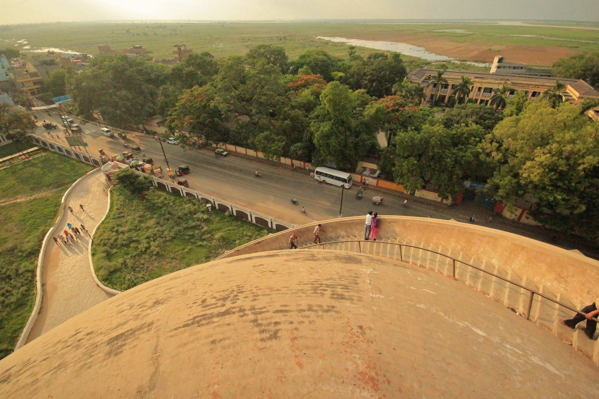

Top Attractions at Gol Ghar
Architectural Design

Gol Ghar’s massive dome and spiral staircase, which wraps around the building's exterior, make it a marvel of 18th-century engineering. Visitors can climb to the top for a stunning view of Patna city and the Ganges River.
Viewpoint and Panorama
Once at the top, visitors are treated to a breathtaking panoramic view of Patna city, including the famous **Ganges River**, and the surrounding areas, making it a popular spot for photography and sightseeing.
Historical Significance
Gol Ghar holds significant historical importance, serving as a reminder of the colonial era and the ingenuity of British engineers. It has become a symbol of Bihar’s history and architectural heritage.